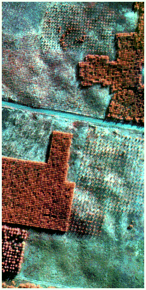
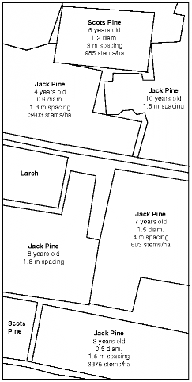
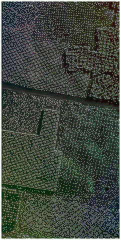
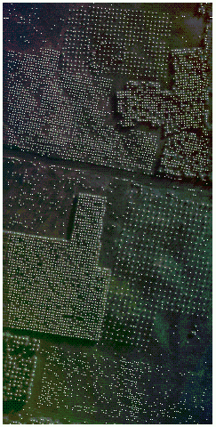
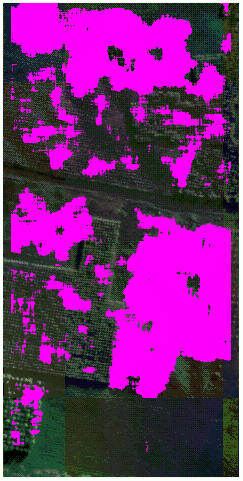
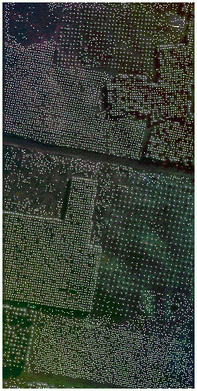

by François A. Gougeon, Ph.D.
The success of forest regeneration is an essential component in sustainable forest management. Its accurate and timely assessment, usually done by field surveys, constitute an integral part of forest vegetation management. Interpretation of aerial photographs can possibly alleviate this process, but the use of digital aerial images offers the potential for more quantitative semi-automatic computerized assessments.
With this in mind, a locally adaptive technique to regeneration assessment from high resolution aerial images (30-60 cm/pixel) was developed. It detects the young trees and produces information such as stem density, average tree spacing and stocking of given stands. It can also pinpoint areas of under or overstocking.
This technique is based on previous work directed at tree detection in mature forest with medium resolution images (1-3 m/pixel) which detects local maxima and considers them to represent the "tree tops" of conifers. Whether used with mature forest stands in medium resolution images or for regeneration assessments in high resolution images, it is generally only appropriate for dense stands where every tree is surrounded by shade. Its use on sparse stands generates numerous false positives on the ground between the trees. For such cases, a modification of the algorithm to take into consideration the presence of a specific shadow for every tree alleviates the problem. The hybrid approach described here is capable of switching from one mode of operation to the other (open or dense stand) based on a pre-computed local directionality factor. Preliminary results on regeneration stands of various ages and densities demonstrate its capabilities.



Fig. 1 - Pseudo-colour infrared view of a MEIS-II image (30 cm/pixel) of the Sturgeon Plantation in the Petawawa Research Forest near Chalk River, Ontario.
Fig. 2 - Characteristics of the regeneration stands in Figure 1.
Fig. 3 - Results from the original technique developed for dense mature stands in medium resolution images (1-3 m/pixel) and based on simply finding local maxima (Gougeon and Moore, 1989). As expected, it works well for dense stands, but produces numerous false positive in open stands.



Fig. 4 - Results from the modified technique for which a shadow in a specific direction (commensurable with that of the sun's direction) has to be detected before the local maxima is considered to represent a tree. It is more appropriate for open stands, but still works well with most dense stands. It has difficulties with trees too small to produce any detectable shadow.
Fig. 5 - The high directionality mask used in the hybrid approach to switch between the two (open and dense stands) techniques. It is based on gradient analysis and mask regions that have a high directional component in a direction commensurable with that of the sun's direction.
Fig. 6 - Results from the hybrid locally adaptive approach which can deal with most open and dense stands. Non-forested areas could have been masked out. It should permit good assessments of stand densities, stocking, and spacing.
Gougeon, F.A. 1997. A locally adaptive technique for forest regeneration assessments from high resolution aerial images. In CD-ROM of Proc. 19th Can. Symp. Rem. Sens. Ottawa, Ontario, Canada, May 24-30, 1997. 9 p.
Gougeon, F.A.; Moore, T. 1989. Classification individuelle des arbres à partir d'images à haute résolution spatiale. Pages 185-196 in Bernier, M.; et al.; eds. Télédétection et gestion des ressources Vol. VI - 6e congrès de L'association québécoise de télédétection. Sherbrooke, Québec, Canada, May 4-6, 1988.
Redid page my way (FG) -- Feb. Oct. 2026